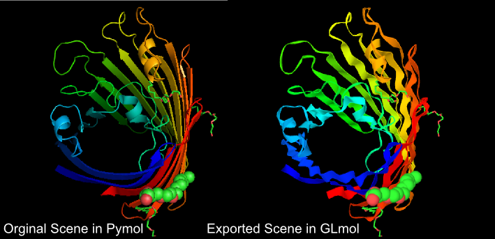
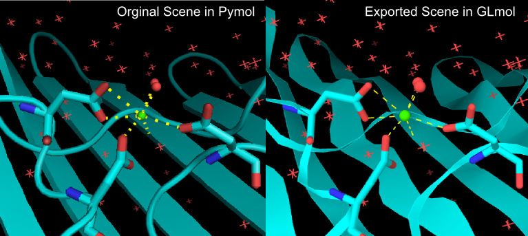

This pymol scripts lets you export a scene from Pymol to GLmol, a molecular viewer for Web browsers written in WebGL/Javascript.
The following scenes were created in Pymol and then exported to GLmol. You can open exported files by clicking the image.


This model is from PDBID 2POR, "Structure of porin refined at 1.8 A resolution" by Weiss, M.S., Schulz, G.E. published on J.Mol.Biol. 227: 493-509(1992).
Currently the followings are exported.
Support for surface representation is under development.
Orthoscopic projection ("set orthoscopic on" in Pymol) will be supported soon.
GLmol runs on newer versions of Firefox, Chrome, Safari or Opera. Internet Explorer is not supported because IE doesn't implement WebGL. GLmol also runs on Sony Ericsson's Android devices which support WebGL. Support for Firefox Mobile is currently underway. Reportedly, GLmol also runs on WebGL enabled safari in iOS.
If you see only black screen and you are using
You can try beta version below. Most core features are implemented but there are some bugs remaining.
You can download them from the following link.
Comments and suggestions are welcome. Please mail to biochem_fan at users.sourceforge.jp or write in the forum.